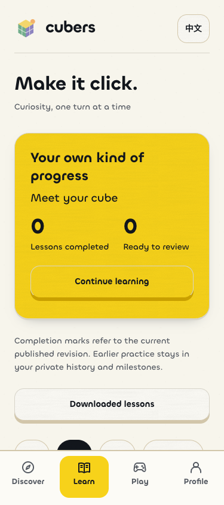
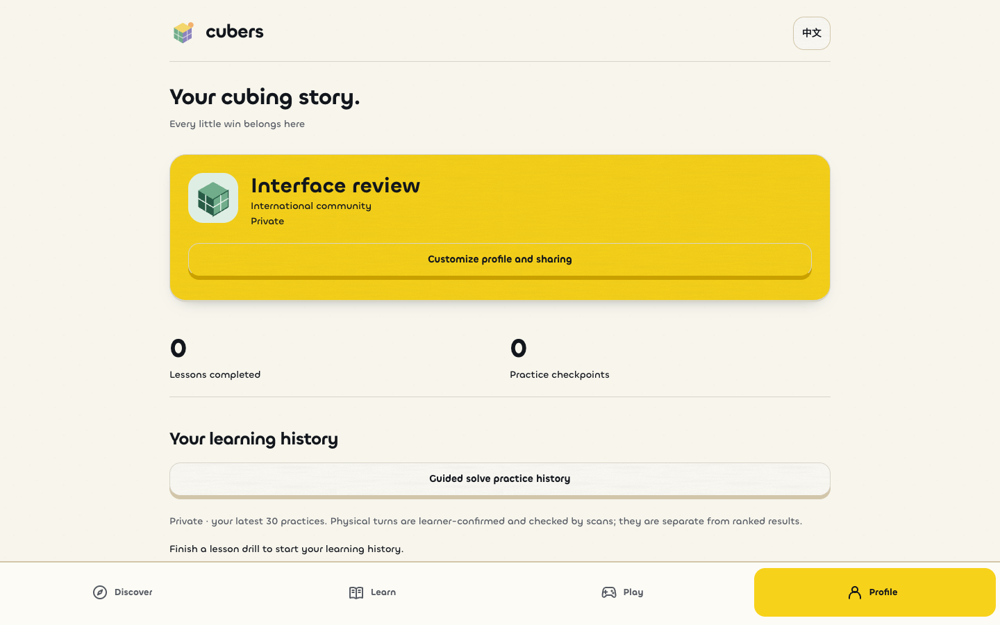
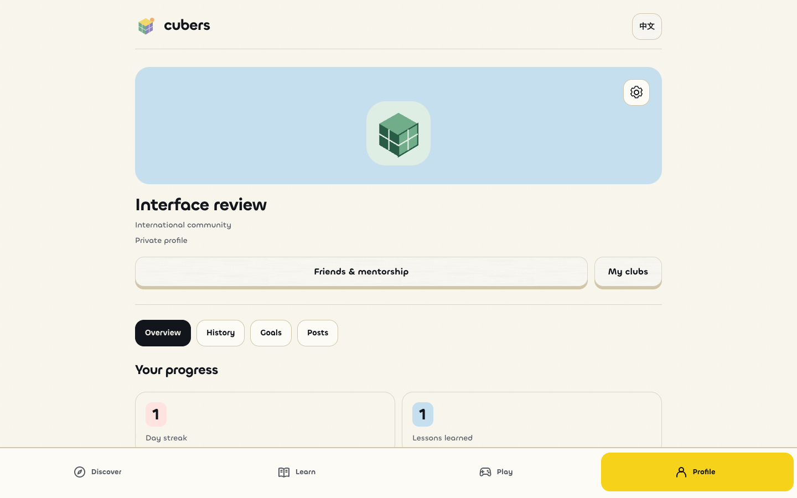
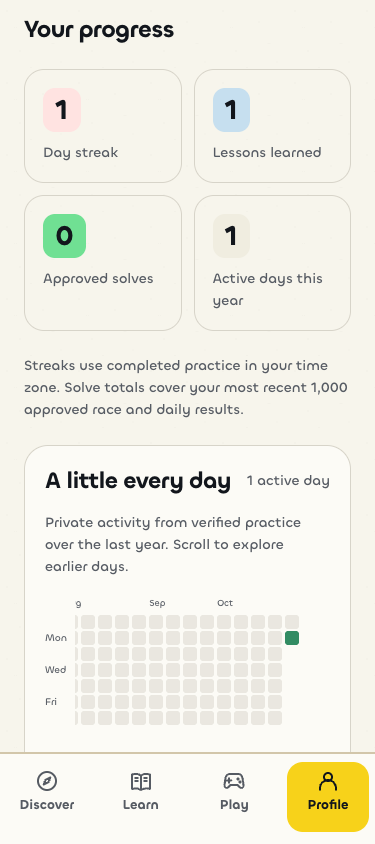
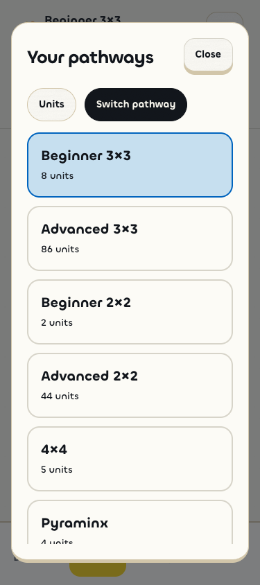
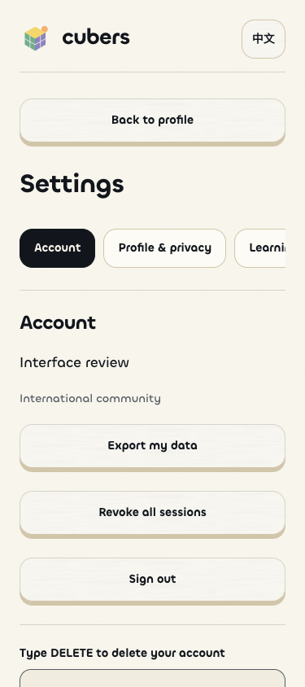

Cubers: pathways and profiles
The requested layout correction keeps Hum's palette and typography while changing the app structure. Screens use an isolated synthetic review account; the new activity reflects verified test practice. Existing personal history was not used.
Learn


Profile


Activity, units and settings


